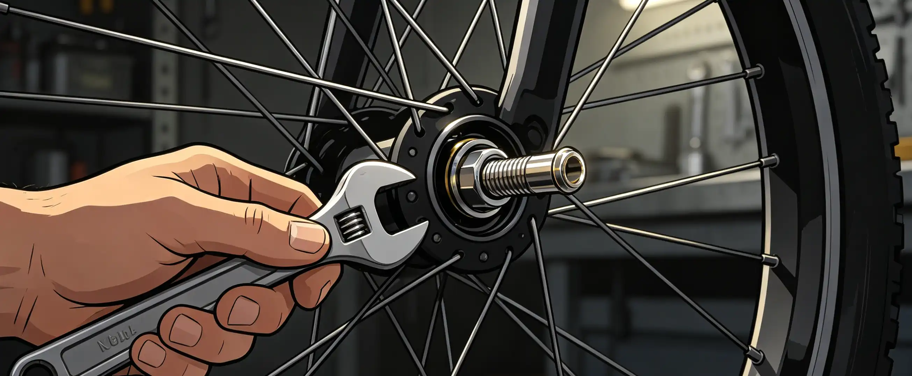

You are 30 miles from home on a Sunday ride when your rear tire flats for the third time this month. You patch it, pump it, and limp home—but you know something is wrong. Tires are the only part of your bike that touches the road, yet many riders push them well past their safe service life. Worn tires increase flat risk by 3–5 times, reduce cornering grip by up to 30%, and can fail catastrophically at speed. Replacement tires cost $30–$ each, but a blowout at 35 mph can cost far more than money. This guide uses mileage data, wear indicators, and visual inspection criteria to tell you exactly when it is time to replace your tires.
The Blowout That Taught Me Respect for Rubber
In July 2024, I was descending the Blue Ridge Parkway at 38 mph when my rear tire exploded. The sound was like a gunshot. I managed to keep the bike upright and coast to a stop, heart pounding. When I examined the tire, the casing had worn through completely—I could see the inner tube bulging through a 2-inch gash in the tread. I had been ignoring the flat-spotted center tread and the visible threads for weeks. That Continental GP5000 had 4,200 miles on it. The manufacturer recommends replacement at 2,500–3,000 miles. I had pushed it nearly 50% past its service life. The replacement cost $65 and took 20 minutes to mount. The lesson: tire replacement is cheap insurance compared to the alternative.
How to Inspect Your Tires: The 5-Point Check
Perform this inspection every 200 miles or before any long ride. It takes 3 minutes.
- Tread wear indicators. Many modern tires have small dimples or holes in the tread (Continental calls them "wear indicators"; Michelin uses "twist" marks). When these disappear, the tire is worn out. If your tire has no indicators, use the penny test: place a penny in the tread groove with Lincoln's head down. If you can see the top of his head, the tread is too shallow.
- Flat-spotting. Road tires naturally develop a flat center section from riding. When the center tread is visibly squared off and the tire profile is no longer round, grip decreases significantly in corners. Replace when the center tread is worn smooth.
- Casing threads. Look for white or colored threads visible through the rubber. These are the casing cords. If you can see threads, the tire is structurally compromised and must be replaced immediately—not after the next ride.
- Sidewall cracks. Small cracks in the sidewall rubber indicate aging and rubber degradation. Light cracking is cosmetic, but deep cracks that expose the casing mean the tire is unsafe.
- Cuts and bulges. Run your fingers along the tire surface (carefully—wear gloves). Any cut that penetrates to the casing is a potential failure point. Bulges indicate internal casing damage and the tire must be replaced immediately.
Tire Life Expectancy by Type
| Tire Type | Typical Mileage Range | Replacement Indicator | Example Model | Price Range |
|---|---|---|---|---|
| Road race tire | 1,500–2,500 miles | Wear indicators vanish, flat-spotting | Continental GP5000 | $55–$ |
| Road endurance tire | 2,500–3,000 miles | Wear indicators, visible casing | Continental Gatorskin | $45–$ |
| Gravel tire | 2,000–2,500 miles | Knob height reduction, sidewall cuts | WTB Raddler | $55–$ |
| Mountain bike tire (XC) | 1,500–2,500 miles | Knob tearing, sidewall damage | Maxxis Ikon | $60–$ |
| Mountain bike tire (enduro/DH) | 500–2,500 miles | Knob undercutting, casing damage | Maxxis Minion DHR II | $70–$ |
| Commuter/touring tire | 3,000–5,000 miles | Flat-spotting, visible casing | Schwalbe Marathon Plus | $40–$ |
These ranges assume proper inflation and normal riding conditions. Riding under-inflated, on rough surfaces, or with heavy loads reduces tire life by 20–50%. A 200-pound rider on rough roads will wear tires faster than a 140-pound rider on smooth pavement.
Front vs Rear Tire Replacement Strategy
Rear tires wear approximately 2–3 times faster than front tires because they carry more weight (roughly 60% of rider weight on the rear) and transmit drive torque. Most experienced cyclists use a rotation strategy: when the rear tire wears out, move the front tire to the rear and install a new tire on the front. This keeps the front tire—which is more critical for steering and braking—always fresh. A front tire blowout is far more dangerous than a rear, so never put your most worn tire on the front.
Tire Aging: When Calendar Time Matters More Than Miles
Rubber compounds degrade over time even without use. Most manufacturers recommend replacing tires after 5–3 years regardless of mileage. UV exposure accelerates this process—a bike stored outdoors in direct sunlight can have tires that are unsafe after 3 years. Check the manufacturing date on the sidewall: look for a 4-digit code (e.g., "1223" means the tire was made in the 12th week of 2023). If your tires are more than 5 years old, inspect them carefully for sidewall cracking and hardening of the rubber compound. Hardened rubber has significantly less grip than fresh rubber.
Who This Is For (And Who It's Not)
Best for: Any cyclist who wants to make tire replacement decisions based on data rather than guesswork. Riders who have experienced repeated flats and suspect their tires are the cause. Commuters and tourers who want to maximize tire life without compromising safety.
Not ideal for: Racers who replace tires every season regardless of wear—you already have a schedule. Riders who exclusively use a shop for all maintenance and trust their mechanic's judgment on tire condition.